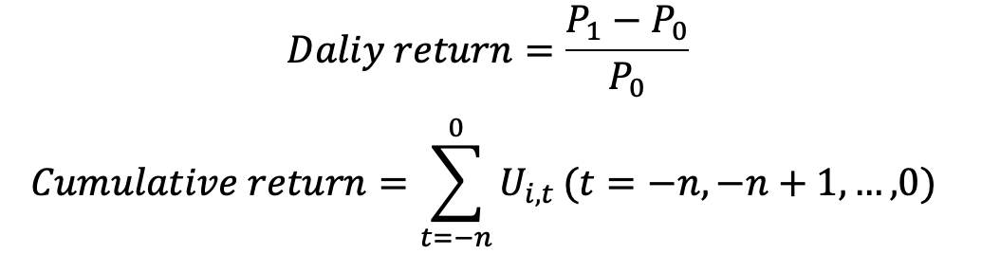
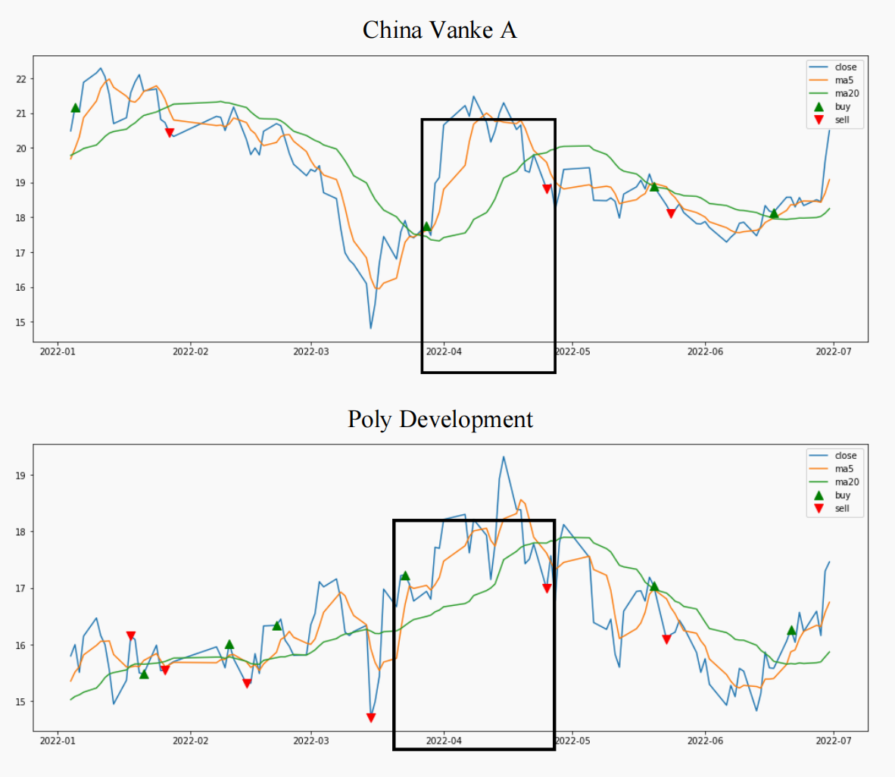
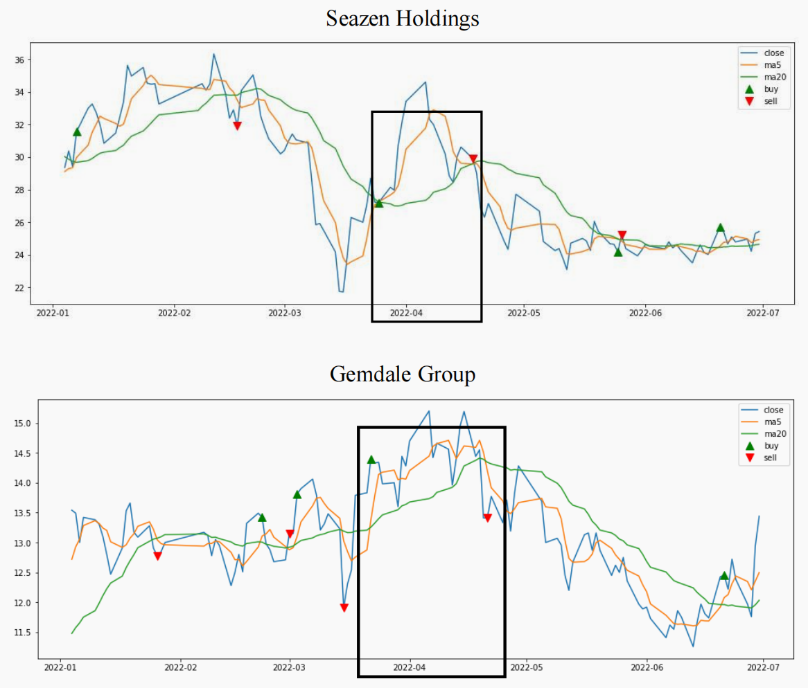
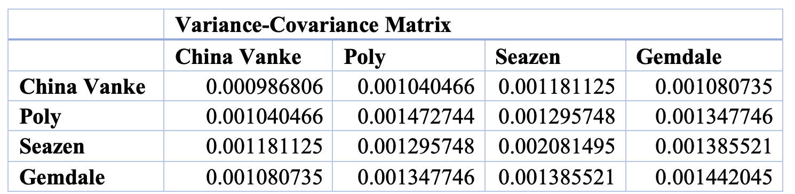
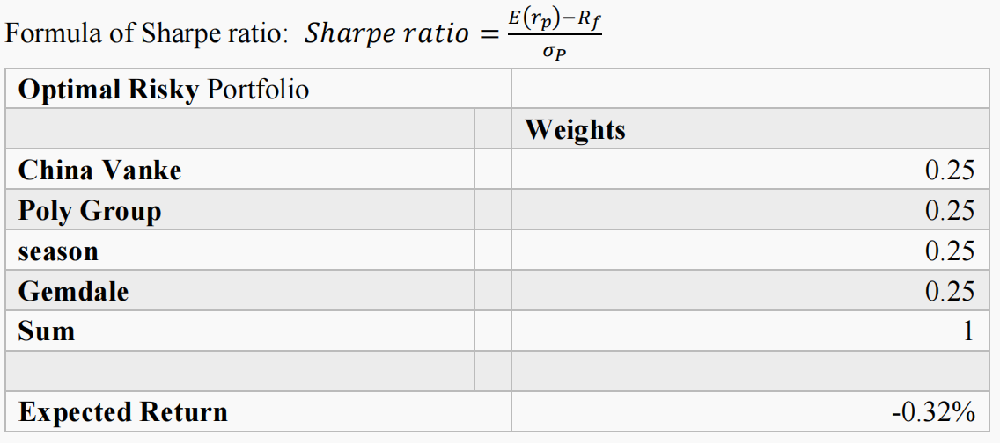

Combining Natural Language Programs and Technical Stock Analysis:
An Example of the Chinese Real Estate Stock Market.
Hong Kong Shu Yan University
209024 Dong Meitong
20/12/2022
Abstract
The author aimed to reduce the subjective psychology of stockholders in the technical analysis of stocks to interfere with the yield, and to address the inability of junior investors to adapt to the intelligent stock selection methods in the digital era. In this paper, the historical trading data of China Vanke Group, Poly Development Group, Seazen Holdings Ltd. and Gemdale Group from January to June 2022 were selected as the experimental samples, and Spyder (python 3.9) was applied to write the allowable codes for Buy and Hold strategy and Moving Average strategy, followed by Microsoft Excel 16.68 to set up fixed formulas to calculate the Sharpe ratio. Although the portfolio's Sharpe ratio in April was -67.44%, this did not prevent the code and formulas in this article from working. The main purpose of the article is to teach investors how to implement technical analysis themselves using intelligent language to predict future stock price scenarios. The authors have innovated in technical analysis and provided the complete code for stock investors.
Key words: Natural language programs, technical analysis, Chinese real estate stocks.
1. Introduction:
1.1 Research Background
The variability of the stock market in any country or region is complex (Noreen, Ayub, Shafique, & Saeed, 2022), which is why investors need to have some reference to these financial products or institutions to reduce their losses when trading. In the case of stock prices, despite the vagaries of the K-line charts over time, there are some patterns that have been developed to provide analysis for subsequent positions (Wei, Ouyang, & Liu, 2022), which are familiar to investors: fundamental analysis and technical analysis. Further elaborating, fundamental analysis involves the analysis of comprehensive data on macroeconomic factors (e.g., world economic growth, national policies, industry boom) and micro-influencing factors (e.g., company performance, financial management, dividend payout) to determine the future trend of the market price of a listed company's stock or other financial product, which investors can compare with the current price of the security to indicate whether the security is overvalued (undervalued); technical analysis, on the other hand, relies on different operations with data such as historical prices and trading volumes to predict the future movement of prices from a mathematical perspective (Chen, 2018). Admittedly, both approaches have their own advantages, but the effectiveness of trading strategies under technical analysis has been disputed by the financial community because the data of technical analysis comes partly from investors' confidence in the market with a certain subjectivity (Song,2015). Consequently, how to minimize or even avoid the influence of such subjective factors on technical analysis strategies with more rigorous calculations has become a topic of importance for traders.
1.2 Research Significance
Starting from the first formulation of artificial intelligence at the Dartmouth Conference in 1956, Peter Muller's invention of alpha system strategy in 1991, and then the listing of China's CSI 300 index futures in 2016 to give quantitative a hedging tool (Yu, 2022), the financial institutions nowadays combine natural language algorithms and various investment theories to provide investors with more accurate and higher yielding portfolios. This may seem to compensate for the shortcomings of technical analysis, which is subjective and intrusive, but since computer-operated stock trading is still an emerging field in China. Concurrently, mastering quantitative trading requires a certain programming foundation and financial knowledge base, and is not suitable for every stockholder's daily use, especially beginners. Hence, this paper is intended to enable stockholders who are trying quantitative trading for the first time to learn how to choose the optimal portfolio by themselves with the help of basic investment theory and simple programming. In addition, the author showed the reader through this article how the code of a complete trading strategy works, explaining how to predict the future trend of a stock.
1.3 Research Content and Object
This study is divided into six parts, they are introduction, literature review, research methodology, code writing process and calculation of Sharpe ratio, discussion of experimental results and conclusion. This article focuses on China's stock market and eventually selected China's real estate industry after a background investigation of the various industries contained in China's three major industries. Since the real estate industry in China is the pillar industry of the Chinese economy (Ma,2021) and also the first choice of many stockholders as well, this article took the stocks of four real estate companies that have been listed on the Shenzhen and Shanghai exchanges in China as the subjects of the experiment. The authors calculate the daily and cumulative returns based on the historical trading prices of these four stocks from January to June 2022. Ultimately, the Sharpe ratio is utilized in this paper to compute the performance of these four stocks as a portfolio.
2. Literature Review
2.1 Research on technical analysis and the efficient market hypothesis.
Coe and Kittipong (2021) suggested that the principles of technical analysis are based on three premises: i. most investors in the market are rational and seek maximum profits, ii. prices evolve in a trending manner, and iii. history is traceable; in other words, the essence of technical analysis is that prices are predictable. Technical analysis is defined as a scientific discipline that predicts possible future trading trends from historical data (McInish&Puglisi,1980). Subsequently, with the rapid development of financial markets, Mitra (2002) argued that technical analysis is the quintessential analytical strategy that investors can quickly pick up and apply flexibly, owing to the patterns of history. On the contrary, it is the factor of "price predictability" that makes technical analysis opposed to the "efficient market hypothesis" of neoclassical financial theory (Chen,2006). What is the reason behind the overturning of the efficient market hypothesis by technical analysis? In the early days, Al-Loughani and Chappell (1997) explained that since rational investors in a competitive market would bid to trade, the current market price is already the final outcome with the influence of all possible factors, and unless new information suddenly appears, the price will not change again and therefore is not predictable. Fortunately, the contradiction between the two theories has not hampered the research of financial scholars but has led them to discover a new way of testing trading strategies -- using technical analysis to detect the weak market hypothesis. There are three types of efficient market hypotheses:
- Weak efficiency: Historical market prices were unable to forecast the future, and investors were unprofitable.
- Semi-strong efficiency: The historical stock price is sufficient to reflect all public information, even if fundamental analysis is used, the investor cannot over-earn.
- Strong efficiency: the historical stock price responds to all public and non-public information, and investors cannot make excessive profits by obtaining insider information.
2.2 Research on the combination of intelligent algorithms and technical analysis.
Artificial intelligence is brought to life in today's digital generation, and it has been found that intelligent algorithms can greatly improve the efficiency of various technical analyses. Especially, the efficient market hypothesis has been questioned more and more in the last two decades of rapid technological development. Scholars in different countries have implemented the arithmetic process of maximizing returns based on historical information through MACD strategies, Buy-and-Hold strategies, RSI strategies, and other methods.
Figure 1: the research on nature language programming with technical analysis around the world from 2016-2022, presented by scatterplot.

Image from: CONNECTED PAPERS
https://www.connectedpapers.com/According to Figure 1, research on smart algorithms for stock trading has been increasing from 2020 to 2022, indicating its emerging significance across nations. The size of the dots in the image depicts the level of correlation between the literature and the author's search topic. Notably, contributors to this field are mainly from the US, India, Korea, and China. An analysis of research in Western countries reveals that quantitative trading using moving average strategies is a popular research theme. For instance, Paul and Paulson (1999) developed an early method of arbitraging oil futures spreads by identifying extreme case trades based on moving average data.Tapa, Yean, and Ahmad (2016) used the Malaysian stock market as a research subject, improved the portfolio return and reduced the investment cost by improving the traditional MA crossover strategy. In addition, Zaimi (2022) found that the simple moving average technique is more effective in identifying the buy or sell points than that calculated using the traditional random walk method in a study of the Casablanca City Stock Exchange. Moreover, the previous two papers also demonstrated that the MA strategy and the Buy-and-Hold strategy used simultaneously or compared to each other can be more efficient in determining the specific time periods of the buy and sell points and is a more reliable strategy for investors who use technical analysis. On the downside, the above literature does not process the data through modern natural language programs and does not specify the computational tools that can inform this paper in this regard.
3. Research Methodology
3.1 Data selection and processing.
Data selection: China Vanke A (000002.SZ), Poly Development (600048.SH), Seazen Holdings (601155.SH), Gemdale Group (600383.SH)
Table1: Top 10 Chinese Real Estate Companies（2022）
| Rank | Enterprise | Code | Listing Location |
|---|---|---|---|
| 1 | China Vanke | 000002 | Shenzhen Exchange |
| 2 | Poly Development Group | 600048 | Shanghai Exchange |
| 3 | China Overseas Development | 0688 | HK Exchange |
| 4 | Country Garden Group | 2007 | HK Exchange |
| 5 | CRLAND | 1109 | HK Exchange |
| 6 | LongFor Group | 0906 | HK Exchange |
| 7 | China Merchants Shekou Holdings | 001979 | Suspended Trading |
| 8 | Seazen Holdings | 601155 | Shanghai Exchange |
| 9 | Gemdale | 600383 | Shanghai Exchange |
| 10 | CIFI Group | 00884 | HK Exchange |
Note: Red font is a sample of this experiment, China Merchants Shekou Holdings has suspended trading, so the author did not select it.
Source：China Real Estate Research Association
http://www.fangchan.com/zt/top100/2022sj/index.htmlThis paper is based on the latest 2022 Real Estate Listed Companies Assessment Research Report published by the China Real Estate Research Association to find the top 10 best growing real estate companies listed on the mainland China stock exchange, see table 1. The stocks listed in Shenzhen and Shanghai exchanges are China Vanke A, Poly Development, Seazen Holdings and Gemdale Group. On the other hand, the advantage of these four stocks becoming a portfolio is that it contains stocks of state-owned holding companies with large assets, high risks and high returns like China Vanke, and also covers medium-risk BB+ private stocks like Seazen Holdings, which has the effect of diversifying risks, etc. This experiment is more suitable for real estate stockholders to refer to. Finally, to ensure the timeliness of the data, the authors crawled the historical trading data from 1/2022 to 6/2022 to illustrate the experimental process.
Data processing tools:
The programming tool used to implement the technical analysis in this experiment was Spyder (python 3.9), and the software used to calculate the Sharpe ratio was Microsoft Excel (16.68).
3.2 Core Theories: Buy-and-Hold Strategy, Short-Term Moving Average (MA) Strategy, and Sharpe Ratio.
As mentioned in the literature review, the Buy-and-Hold strategy and the Moving Average strategy are two of the most popular and easy to follow approaches in technical analysis. Along the same lines, in order to make the calculated results informative, the paper visualized and compared the returns of the two strategies. Besides, Markowitz's Sharpe ratio can be used to measure the extent to which asset returns compensate investors for the risk they take and is more computationally efficient using Excel, hence the author used this ratio to demonstrate the performance of these four stocks in different periods.
4. Empirical Process
4.1 Code Writing
This article will provide investors with a reference by displaying the main code writing steps for the Buy and Hold strategy and the MA strategy.Step 1: Import the database.

First, the author imported a third-party database, Tushare, which is a free and open-source python financial data interface package containing historical trading data of most Chinese stocks, futures, bonds and other financial commodities, making it easy for beginners to operate on their own. Then Pandas is imported into the environment to facilitate the next processing and analysis of the data; finally, the Matplotlib library is imported, aiming to plot the returns for the subsequent performance into a chart.
Step 2: Obtain stocks information.

Take Poly Development (600048) as an example, set the start and end time of stock trading and the stock's code, then get the historical trading data (daily K-line data) of Poly Development from January to June 2022, and arrange them in raw order by date. The index is converted to time format. In the end, there are two new data frames required to exhibit the returns under Buy-and-Hold strategy and MA strategy, which are daily return and cumulative return respectively.
Step 3: Return of the stock under the Buy and Hold strategy.

Buy-and-hold strategy implies that once an investor has identified a certain portfolio, he or she will not change the percentage of asset allocation in it for 3 to 5 years. Accordingly, to cater for this experiment, the author assumed that 4 stocks are held as a fixed portfolio and the investor will not change this allocation during January-June 2022. The daily and cumulative returns for each stock are then calculated with the following equations:
The cum＿() function in the code helps us to calculate the cumulative return using the data of daily return, so it is only necessary to set the daily return according to the above formula. And finally, the author plots the return line graph and legend with Matplotlib.
Step 4: Return of the stock under the Moving Average Strategy.

The moving averages for this experiment were chosen to be the 5-day average and the 20-day average. The principle is: buy the stock when the 5-day average crosses the 20-day average and sell the stock when the 5-day average crosses the 20-day average. This step can be elaborated as, when the 5-day SMA penetrates above the 20-day SMA signifies optimistic market sentiment in the short term; and the cost of trading in the past 5 days has exceeded the cost of the past 20 days, those who have bought will continue to hold this stock waiting for appreciation, and those who do not hold the stock are suitable to buy at this time, and vice versa. Then the author set floating point signals on both the upward and downward penetration for the program to recognize and mark. This step is also an advantage of using Python, and furthermore, investors can observe golden crosses and death crosses through programming instead of the naked eye. Eventually, daily and cumulative returns are calculated, and line graphs and legends are plotted. Likewise, the author primarily used a for loop statement and an if conditional statement to process 6 months of data when identifying signals, avoiding repetitive operations when comparing prices, and the results would be more accurate when processed by a computer. Special attention is paid to the fact that the authors set the buy point to green and the sell point to red, ma5 represents the 5-day short-term average and ma20 represents the 20-day long-term average; investors can change the trading signals and the average duration according to their needs by analogy.
4.2 Analysis of charts.
4.2.1 MA Return and Buy & Hold Return.
Figure 2 to 5: The result with python code.


The above four charts represent the cumulative returns of four stocks obtained using a combination of Python programming and technical analysis trading strategies (Buy and Hold strategy and Moving Average strategy). The author has observed the following observations:
- The cumulative returns of the four stocks range from 0.8% to 1.1%, the minimum will be less than 0.6% and the maximum will not exceed 1.3%.
- The cumulative return trends of the stocks of China Vanke A and Seazen Holdings were basically the same under both strategies, with only isolated periods where the MA strategy returns remained constant, but the Buy-and-Hold strategy returns fluctuated up and down.
- In terms of the MA strategy, the four stocks did not perform well from March to April, with the cumulative returns of the top three stocks remaining unchanged over the month and the stock of Gemdale Group falling sharply over the period. The returns of all four stocks peaked in early April and would remain unchanged after mid-April and continue through mid-May.
- From the perspective of the Buy-and-Hold strategy, the cumulative returns of all four stocks did not appear to remain constant, with each stock experiencing a peak in returns during April-May and a floating decline after mid-April.
Thereby, the author concluded that the highest returns for all four stocks were concentrated in April-May when the returns under the Buy-and-Hold strategy and the trend of returns under the SMA strategy were essentially the same. This condition indicated that the Chinese real estate market was more optimistic during this time period; the stock price was bound to rise in early April, when it was appropriate to buy as soon as possible; the stock price would fall in the end of April, and it was recommended to sell immediately before May.
4.2.2 Buy and sell signals.
Figure 6 to 9: The following charts are the buy and sell signals performance of the four stocks under the SMA strategy.
 From Figures 6 to 9, the four stocks must be bought once before the peak in returns arrived, and the signal after the decline must be a sell. Although this phenomenon is realized from mid-March to mid-April, which was half a month earlier than the author assumed from early April to early May, it aptly illustrated that the averaging strategy could predict the future rise or drop of stock prices and remind people to buy or sell at the right time, which can catch the golden period of rising stock prices and thus gain more additional returns.
In addition, the figures for Poly Development and Gemdale Group revealed highly frequent buy and sell signals in January-March 2022, which the author thought the performance of the real estate industry repeatedly switches between bull and bear markets around the Chinese New Year, prone to stock misbehavior and making the data variance unfeasible due to excessive differences. Therefore, the authors did not consider the fluctuations from January to March in the calculations and focus on the period from April to May to show the reader the Excel calculation process. On the contrary, the irregular fluctuations should not be ignored in the actual trading process, and it is possible that macroeconomic factors interfere with the stock market, but since they are not relevant to this experiment, the authors will not explain the analysis here.
4.3 Calculating the Sharpe Ratio.
Table 2: Return variance matrix for the four stocks.
The authors downloaded the daily closing prices of the four stocks in April 2022 from the Yahoo Finance website and performed the calculations. The following functions were set in Excel to solve for the standard deviation and variance matrices：
- AVERAGE：Find the average of daily returns.
- VAR.S: Assume that the average of the four stocks is a sample.
- COVARIANCE.S : Returns the sample covariance, which is the average of the product of the deviations of each pair of data points in the two data sets.
- MMULT: Converting a row of data into a column situation for the subsequent stock return matrix.
- SORT: Return the square root of positive.
Table 3：Sharpe ratio of the portfolio from1st April to 30th April.
According to the code calculation in the previous step and the dashboard trend in the figures, the author discovered that: buy at the beginning of April, the stock price will rise afterwards and sell before the beginning of May to prevent excessive losses due to the fall of the stock price. For that reason, the author computed the Sharpe ratios of these four stocks as a portfolio based on Markowitz's optimal portfolio theory, and the data were selected from the 1st to the 30th of April, and the results were calculated as follows:
At first the author used the 30-day stock price to find the average return and used the Excel formula to find the standard deviation and variance.The authors assume that each stock has the same investment weight, and the risk-free rate 〖(R〗_f)is set to the Chinese one-year treasury rate (2.1%), and the Sharpe ratio calculated according to the formula is -67.44%. The result is negative, indicating that the risk of this portfolio outweighs the return and is not suitable as a portfolio investment. Moving on, the author fixed all the above formulas using Excel and substituted the daily stock prices of these four stocks for the other five months as historical data. Resultantly, repeating the above steps yielded Sharpe ratios for his months of -68.81%, -70.37%, -67.53%, -71.72%, and -65.88%, correspondingly.
This indicates that the return per unit of investment from this portfolio could not cover the risk during six different months, then even though the cumulative return peaked in April does not mean it can offset the risk-free rate for the month; in addition, the Sharpe ratio in April and June is the least negative of all. Therefore, the authors combined Python's graphs and Excel's calculations to consider that one can buy in April or June and sell before the end of the month, and if one adjusts the investment ration of each stock (it should not be 25% for each stock), perhaps the situation will improve, and a positive Sharpe ratio will appear.
Meanwhile, the author also calculated the average return for April as -0.31% (China Vanke), 0.04% (Poly Group), -0.93% (season), -0.09% (Gemdale). This suggested that Poly Development has the best yield and if investors buy only one then it is recommended to buy Poly Group's stock in April.
This paper introduced the readers and investers to the complete process of quantitative stock trading operations, however, the performance of the experimental subjects in terms of returns was not high, so the author made the following discussion and analysis.
5. Discussion
The research process in this paper is divided into two stages, which were: i. Identifying the buy and sell signals in the role of two trading strategies with the code, ii. Verifying whether this signal is worth investing in the portfolio in the time period corresponding to it using the Sharpe ratio. The results show that there are also two processes: i. it is found that these four stocks should be bought at the beginning of April and sell them by the beginning of May, ii. these four stocks are not suitable as a portfolio and if a portfolio must be invested, it is proposed to trade and change the investment weights in April and June. The author argued that there are several possible factors that could cause a negative Sharpe ratio:
First, the stock price is manipulated by the company, which can lead to uncertainty in buy and sell signals. If a company has a major accident, the trading will become more frequent during this period and the results of the averaging strategy will not be informative. Secondly, the author relied on the one-year interest rate of Chinese Treasury bonds when computing the risk-free rate, which is a conservative algorithm. The risk of Treasury bonds is generally considered to be low, but the interest rate of the bonds changes from year to year and is therefore not rigorous enough. The last issue is the investment weighting of these four stocks, which the author postulated to be 25% for each stock, but in practice it will not be completely balanced, and the author is experimenting merely for the completeness of the data calculation. As a result, adjusting the weights will also affect the final result of the Sharpe ratio.
6. Conclusion
This paper presented investors with the complete code and procedure for experimenting with stocks of four listed companies in the Chinese real estate industry. In spite of the low return performance of the portfolio hypothesized by the author, it did not prevent investors from learning the code and the computational process. This article contributed superficially to the research area of technical analysis of stocks implemented in natural language programming. Nevertheless, it should be reminded that the operations in this article are theoretically feasible, but the actual investment returns will need to be combined with the investor's personal risk preferences, the state of the economy and the dynamics of the stock industry, and it is irrelevant if significant losses occur. Finally, the authors find that the Sharpe ratio can be improved by improving the asset weights and risk-free rate settings through the study of trading strategies, or by using other programming software or even replacing the short-term averaging strategy with a long-term averaging strategy. The disadvantage is that the author does not provide more specialized metrics such as maximum retracement and annual return, which can be improved in future studies. Other scholars can also make reference to this paper's research approach and combine it with other stock technical analysis strategies.
Implications: investment returns on stocks have always been difficult to judge (Li, 2018), particularly in China where the market is interfered by the government and corporations, which precisely provides a considerable research potential for finance scholars. China's housing prices have remained very high since the financial crisis in 2008, which has led to a property bubble and is one of the reasons why many investors are afraid to invest in the stocks of real estate companies. Even though we cannot change the situation of the entire industry, we can innovate investment measurements to avoid future losses. In this way, it is particularly important to use artificial intelligence to calculate asset allocation and trade timing. This article only addressed the two most basic technical analysis strategies and explained to the reader how some private trust companies manage their financial planning and did not mention more complex strategies and yield calculations. Most importantly, the author contends that investors should understand the fundamentals and not blindly hand over their entire assets to a trust company or investment manager. And that is simultaneously one of the factors that have led the Chinese government to ban some institutions from implementing quantitative trading with artificial intelligence. The authors are confident that by teaching investors to use more advanced language to calculate technical analysis can help them gain more benefits and is a reflection of the growing power of Chinese technology as well.
7. Reference
1. Al-Loughani, N., & Chappell, D. (1997). On the validity of the weak-form efficient markets hypothesis applied to the London stock exchange. Applied Financial Economics, 7(2), 173-176.http://0-search.proquest.com.lib.hksyu.edu.hk/scholarly-journals/on-validity-weak-form-efficient-markets/docview/197178186/se-2
2. Chen, K. (2018). An empirical study on the effectiveness of common technical analysis in Chinese stock market [Unpublished doctoral dissertation]. Nanjing University of Technology.https://kns.cnki.net/KCMS/detail/detail.aspx?dbname=CMFD201901&filename=1018312824.nh1. https://doi.org/10.1007/s10690-021-09337-5
3. Coe, T. S., & Kittipong, L. (2021). Applying Technical Trading Rules to Beat Long-Term Investing: Evidence from Asian Markets. Asia - Pacific Financial Markets, 28(4), 587-61
https://doi.org/10.1007/s10690-021-09337-5
4. Li, Z. W. (2018). A test of the weak efficient market hypothesis [Unpublished doctoral dissertation]. Shandong University.
5. Liu, C. C. (2021). Research and implementation of quantitative trading system based on turtle law [Unpublished doctoral dissertation] Beijing University of Posts and Telecommunications.https://kns.cnki.net/KCMS/detail/detail.aspx?dbname=CMFD202201&filename=1021130314.nh
6. McInish, T., & Puglisi, D. J. (1980). Technical analysis and utility preferred stocks: QJFA. Nebraska Journal of Economics and Business, 19(3), 55. http://0-search.proquest.com.lib.hksyu.edu.hk/scholarly-journals/technical-analysis-utility-preferred-stocks/docview/194763695/se-2
7. Mitra, S. K. (2002). Profiting from technical analysis in Indian stock market. Finance India, 16(1), 109-120.
http://0-search.proquest.com.lib.hksyu.edu.hk/scholarly-journals/profiting-technical-analysis-indian-stock-market/docview/224361163/se-2
8. Ma, A. (2022). Profitability of technical trading strategies under market manipulation. Financial Innovation, 8(1).
https://doi.org/10.1186/s40854-021-00304-7
9. Noreen, U., Shafique, A., Ayub, U., & Saeed, S. K. (2022). Does the Adaptive Market Hypothesis Reconcile the Behavioral Finance and the Efficient Market Hypothesis? Risks, 10(9), 168.
https://doi.org/10.3390/risks10090168
10. Paul, B. G., & Paulson, A. S. (1999). Risk arbitrage opportunities in petroleum futures spreads. The Journal of Futures Markets, 19(8), 931.
11. Song, J.H. (2015). Theory and practice of technical analysis in stock market [Unpublished doctoral dissertation]. Lanzhou University.
https://kns.cnki.net/KCMS/detail/detail.aspx?dbname=CMFD201601&filename=1015342483.nh
12. Tapa, A., Yean, S. C., & Ahmad, S. N. (2016). Modified Moving-average Crossover Trading Strategy: Evidence in Malaysia Equity Market. International Journal of Economics and Financial Issues, 6(7).
http://0-search.proquest.com.lib.hksyu.edu.hk/scholarly-journals/modified-moving-average-crossover-trading/docview/1846291755/se-2
13. Wang, X.C. (2014). Construction of quantitative trading intelligence system based on LASSO and neural network - taking CSI 300 stock index futures as an example. Investment Research (09),23-39.
14. Wei, X., Ouyang, H., & Liu, M. (2022). Stock index trend prediction based on Tab Net feature selection and long short-term memory. PLoS One, 17(12).
https://doi.org/10.1371/journal.pone.0269195
15. Yang, J., Wang, Y., & Li, X. (2022). Prediction of stock price direction using the LASSO-LSTM model combines technical indicators and financial sentiment analysis. PeerJ Computer Science.
https://doi-org.hksyu.idm.oclc.org/10.7717/peerj-cs.1148
16. Yu, Y. R. (2022). Research on quantitative bond trading strategy based on moving average technical indicators. Times Business and Economics (09), 40-45.
17. Zaimi, W. (2022). An Empirical Analysis of a Stock Market Index of a Developing Country: Case of the Main Index of the Casablanca Stock Exchange MASI. Global Business & Finance Review, 27(4), 1-16.
https://doi.org/10.17549/gbfr.2022.27.4.1
18. China Real Estate Research Association (2022). Top 10 Chinese Real Estate Companies.
http://www.fangchan.com/zt/top100/2022sj/index.html
19. Data resource: Yahoo Finance.
https://hk.finance.yahoo.com/quote/CSV/history/